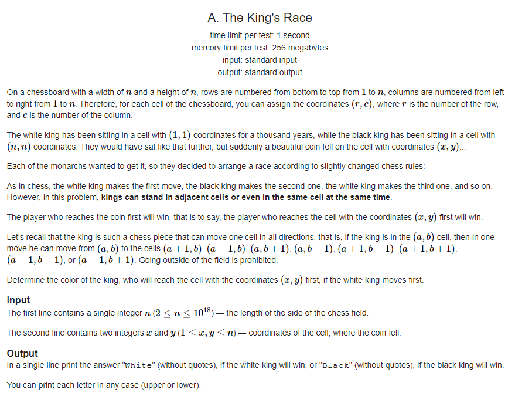
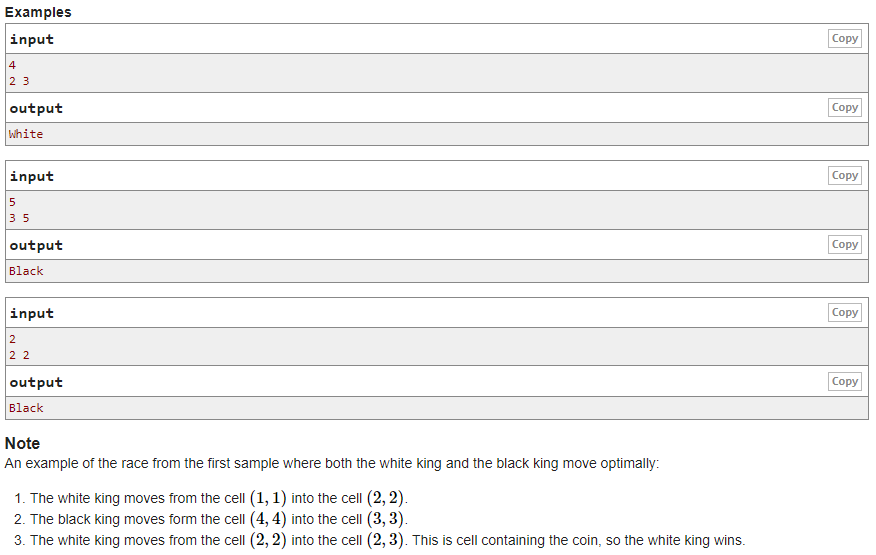
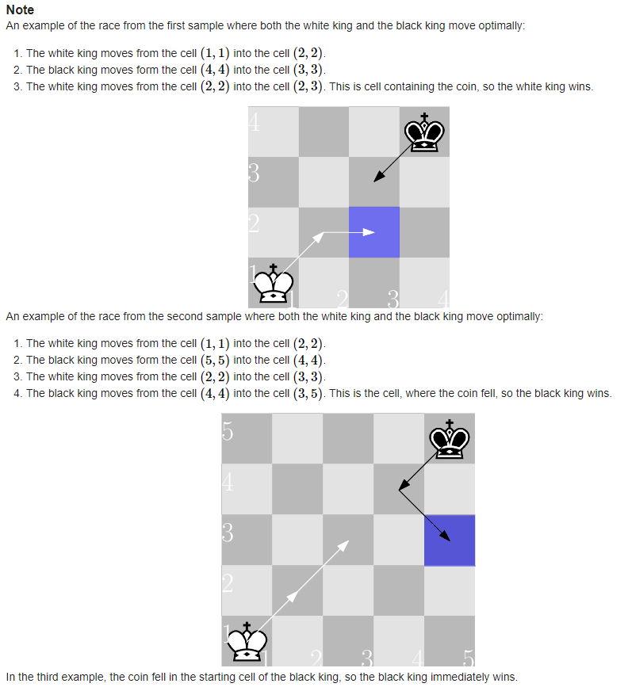
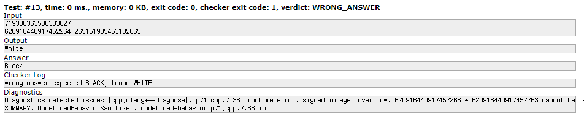
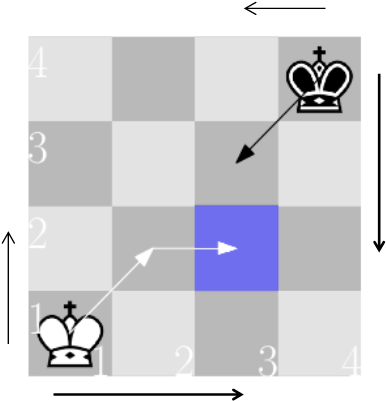

#INFO
Rate : 900
출처 : Lyft Level 5 Challenge 2018 - Final Round (Open Div. 2)
https://codeforces.com/problemset/problem/1075/A
  
#SOLVE
처음에는 각 퀸과 코인 사이의 거리를 좌표로 나타내어 점과 직선 사이의 거리 공식을 이용해 문제를 풀이 하고자 하였다.
#include <iostream>
using namespace std;
int main(){
long long n, r, c;
cin >> n >> r >> c;
long long whiteLen = (r - 1) * (r - 1) + (c - 1) * (c - 1);
long long blackLen = (n - r) * (n - r) + (n - c) * (n - c);
if(whiteLen < blackLen) cout << "White" << '\n';
else if(blackLen < whiteLen) cout << "Black" << '\n';
else if(whiteLen == blackLen) cout << "White" << '\n';
return 0;
}하지만 13번 테스트 케이스에서 integer overflow가 발생하였다.

이번에는 거리가 아닌 "이동 횟수"를 기준으로 문제에 접근하였다.
Queen 과 Coin 사이의 세로 길이 가로 길이 중 더 긴 값을 각 퀸의 이동 횟수로 설정한다.
만약 white Queen의 이동 횟수가 Black Queen 보다 작다면 White를 출력한다.
반대로 Black Queen의 이동 횟수가 white Queen 보다 작다면 Black을 출력한다.
white Queen의 이동 횟수와 Black Queen의 이동 횟수가 동일한 경우에는 체스의 룰 상 white Queen 이 먼저 이동을 시작하기에 White를 출력한다.

#include <iostream>
#include <algorithm>
using namespace std;
int main(){
long long n, r, c;
cin >> n >> r >> c;
long long whiteLen = max(r - 1, c - 1);
long long blackLen = max(n - r, n - c);
if(whiteLen < blackLen) cout << "White" << '\n';
else if(blackLen < whiteLen) cout << "Black" << '\n';
else if(whiteLen == blackLen) cout << "White" << '\n';
return 0;
}#CODE
#include <iostream>
#include <algorithm>
using namespace std;
int main(){
long long n, r, c;
cin >> n >> r >> c;
long long whiteLen = max(r - 1, c - 1);
long long blackLen = max(n - r, n - c);
if(whiteLen < blackLen) cout << "White" << '\n';
else if(blackLen < whiteLen) cout << "Black" << '\n';
else if(whiteLen == blackLen) cout << "White" << '\n';
return 0;
}